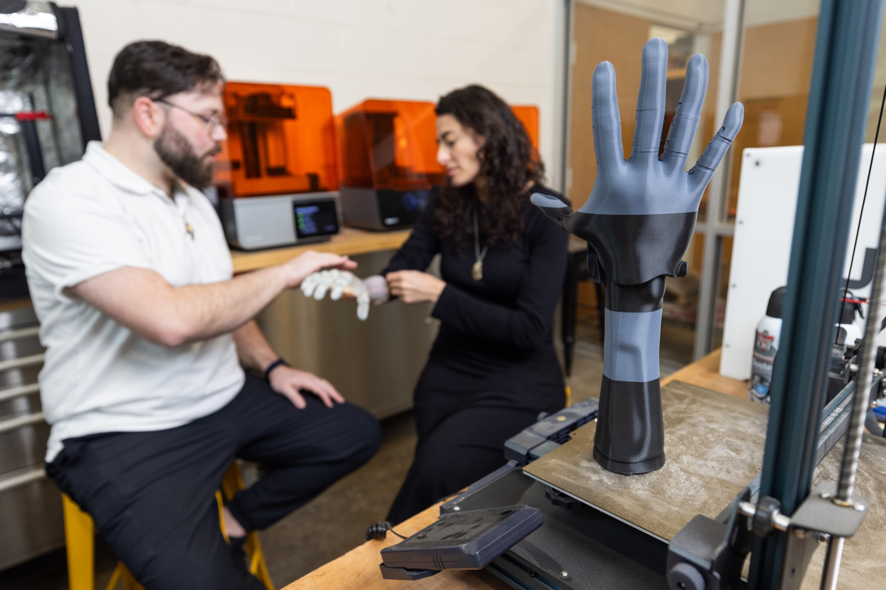

TrueFormas Receives NCInnovation Pipeline Development Grant
The TrueFormas project was selected to receive an NCInnovation Pipeline Development Grant, supporting the advancement of human-centered prosthetic technology from early-stage research toward real-world application. The award provides funding and entrepreneurial training to validate the technology, strengthen industry partnerships, engage with prosthetic users, and prepare the project for future commercialization and larger-scale external funding.
The grant marks an important milestone in bringing industrial design into the field of orthotics and prosthetics, helping transform research into accessible solutions that improve both function and identity.
Learn more about NCInnovation here
CONCERT Grant Supports the Next Phase of TrueFormas Research
The TrueFormas project received a CONCERT Research Grant from Appalachian State University's Research Institute for Environment, Energy and Economics (RIEEE). The grant supports interdisciplinary, collaborative research with the goal of generating new knowledge and positioning projects for future external funding.
This support will advance the development and evaluation of human-centered prosthetic technologies by expanding collaborations with prosthetic users, orthotics and prosthetics specialists, engineers, and researchers. The funding will also help strengthen the research needed to move these concepts closer to clinical application and real-world impact.
Learn more about the CONCERT Grant Program here